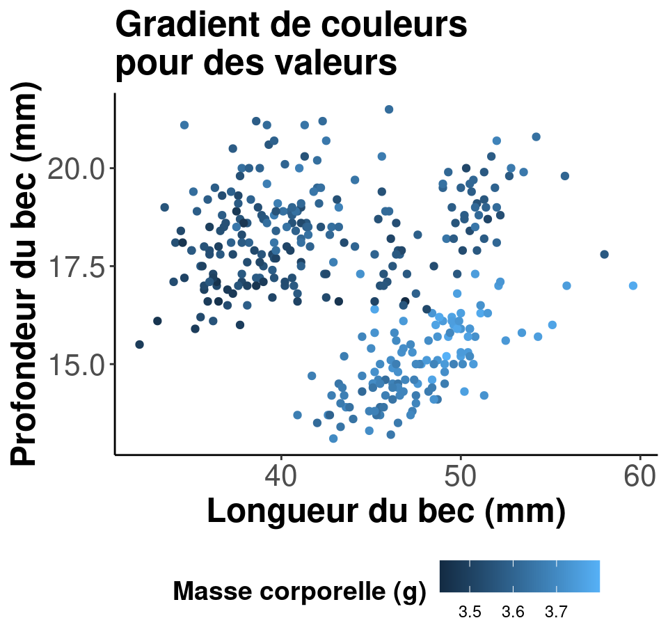
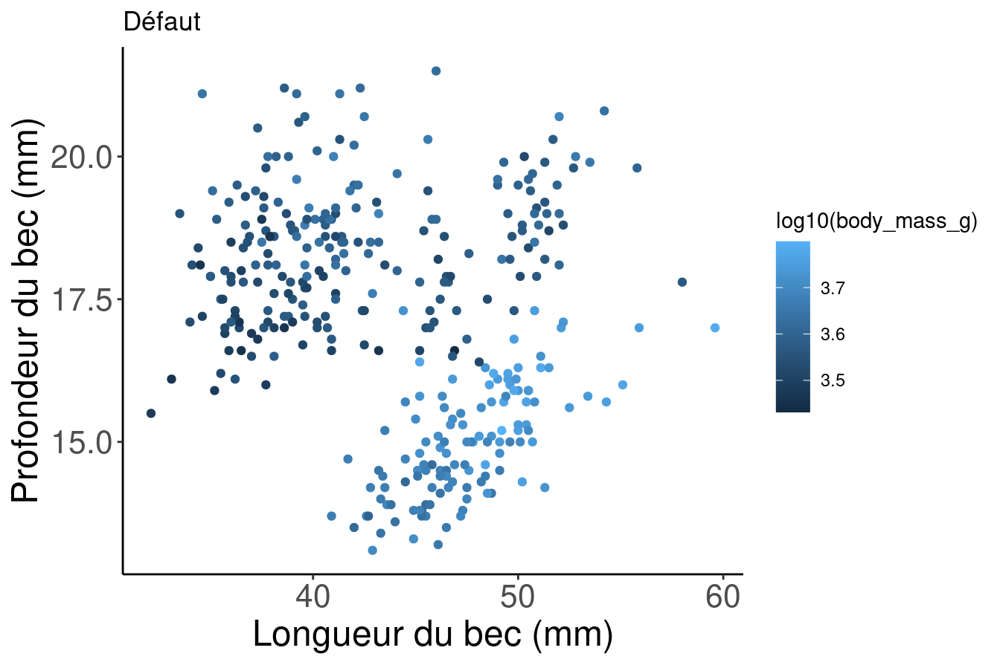
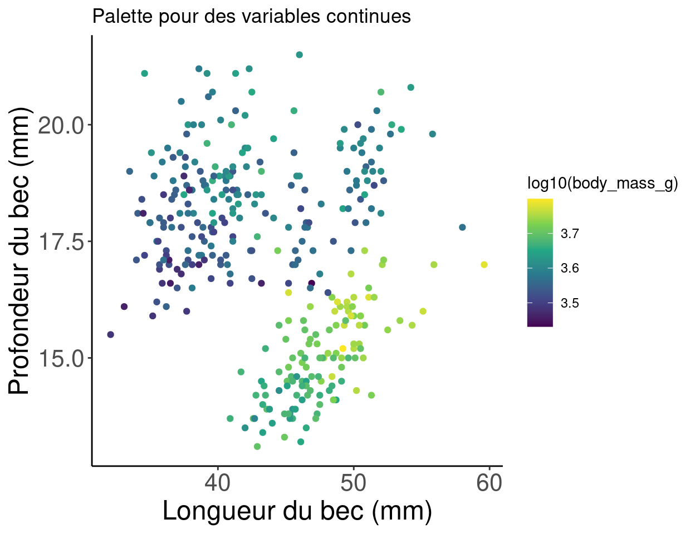
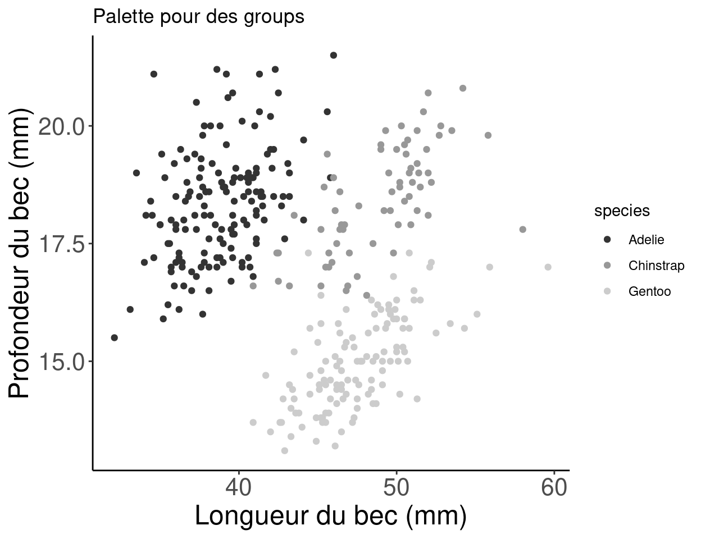
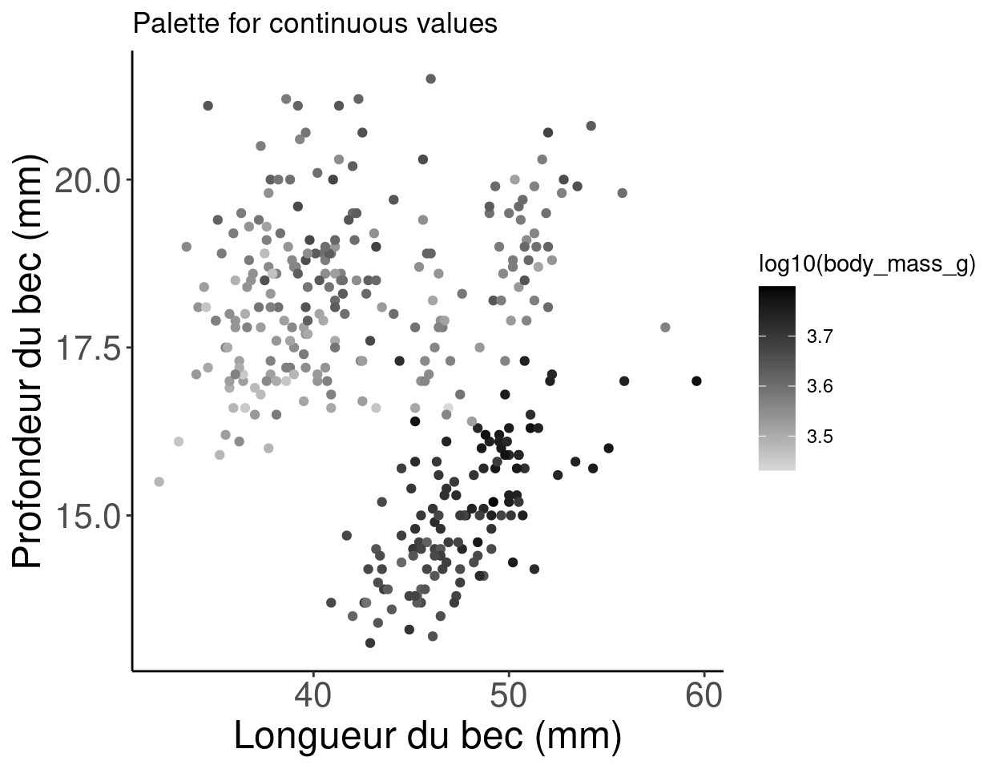
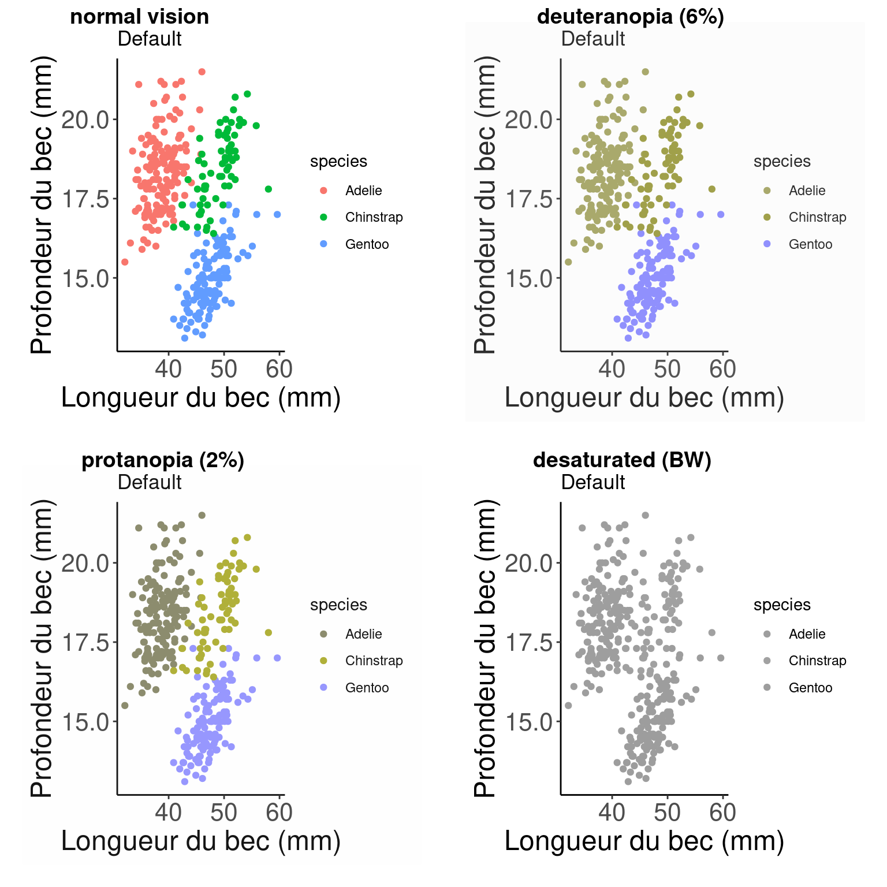

Chapitre 8 Les couleurs: faites parler vos données
Lorsque nous concevons des graphiques, nous pouvons vouloir changer la couleur de nos points de données afin de communiquer différentes informations sur les données. Nous pouvons vouloir:
- Différencier entre des groupes
- Représenter les valeurs des données
- Mettre en évidence des éléments spécifiques


Référence: Fundamentals of Data Visualization (???).
8.1 Utiliser aes() pour changer les couleurs
Nous pouvons utiliser la couche esthétique aes() pour associer des couleurs à nos données dans nos graphiques. Cela nous permettra de communiquer clairement des messages spécifiques sur nos données. Par exemple, si nous voulons savoir si la longueur du bec et la longueur des nageoires varient différemment d’une espèce à l’autre, lequel de ces graphiques nous permet de répondre à cette question?
# No colour mapping
ggplot(data = penguins, aes(x = bill_length_mm, y = flipper_length_mm)) +
geom_point() + geom_smooth(method = lm) + labs(title = "Sans code de couleur",
x = "Longueur du bec (mm)", y = "Profondeur du bec (mm)")
# Avec code de couleur
ggplot(data = penguins,
aes(x = bill_length_mm,
y = flipper_length_mm,
col = species)) + # l'argument col met une couleur par espèce
geom_point() +
geom_smooth(method=lm) +
labs(title = "Avec code de couleur",
x = "Longueur du bec (mm)",
y = "Profondeur du bec (mm)")
8.2 Changer les couleurs manuellement
Dans l’exemple ci-dessus, nous avons utilisé l’argument col dans aes() afin de colorer automatiquement nos points de données par espèce. Ceci est possible car aes() peut appeler nos variables de données. Cependant, cette méthode utilisera une palette de couleurs par défaut. Si nous voulons ajouter des couleurs spécifiques à nos graphiques, nous pouvons le faire manuellement en utilisant scale_colour_manual() ou scale_fill_manual().
# Défaut
# Permettre à ggplot d'assigner un code de couleurs aux
# espèces
pp <- ggplot(data = penguins) + geom_point(aes(x = bill_length_mm,
y = bill_depth_mm, colour = species)) + labs(title = "Default",
x = "Longueur du bec (mm)", y = "Profondeur du bec (mm)")
pp# Créer un code de couleur manuellement
# En utilisant scale_colour_manual(),
# nous pouvons spécifier les couleurs précises que nous voulons utiliser
pp +
scale_colour_manual(
# Notez que l'ordre des couleurs correspondra à
# l'ordre des espèces indiqué dans la légende
values = c("grey55", "orange", "skyblue"))Ici, nous enregistrons notre graphique en tant qu’objet (pp), et nous ajoutons des éléments à cet objet avec un + pour changer l’échelle de couleurs. Nous n’avons pas besoin de réécrire tout le ggplot pour le personnaliser!
8.3 Gradients
Nous pouvons faire la même chose avec des gradients de couleur en utilisant scale_colour_gradient() si nous voulons communiquer quelque chose sur nos données continues. Dans cet exemple, nous colorons nos points de données par masse corporelle en utilisant un gradient.
# Défaut
# L'utilisation de l'argument couleur dans aes() va
# utiliser une palette de couleurs par défaut pour créer
# notre gradient.
pp2 <- ggplot(data = penguins) + geom_point(aes(x = bill_length_mm,
y = bill_depth_mm, colour = log10(body_mass_g))) + labs(title = "Défaut",
x = "Longueur du bec (mm)", y = "Profondeur du bec (mm)")
pp2
8.4 Utiliser une palette de couleurs prédéfinie
Si vous préférez utiliser une palette de couleurs prédéfinie plutôt que de définir vos couleurs manuellement, mais que vous ne souhaitez pas utiliser la palette par défaut, ne vous inquiétez pas! De nombreuses options s’offrent à vous.
Il existe de nombreuses librairies de couleurs R spécialement conçus pour vous fournir une gamme d’options de palette de couleurs! Par exemple, la librairie RColorBrewer propose 35 palettes!
Vous pouvez voir ici qu’elles sont organisées en palettes séquentielles, divergentes ou un mélange des deux. Vous pouvez imaginer que différentes palettes sont plus pertinentes pour différents types de données.

Vous voulez voir ces palettes en action? Voici un exemple d’utilisation de la palette Dark2 pour grouper des points de données avec la fonction scale_colour_brewer() et l’argument palette.
# Palette pour des groupes
pp + scale_colour_brewer(palette = "Dark2") + labs(title = "Palette pour des groupes")There are other functions within the RColorBrewer package as well. By using scale_color_viridis(), we can use a default package that will translate from colour to gray scale without losing information. (Note that this is also an important consideration for colourblindness, which we will discuss soon).
# Palette pour des variables continues
pp2 + scale_color_viridis_c() + labs(title = "Palette pour des variables continues")
Maintenant, que faire si nous voulons utiliser uniquement la palette de gris à des fins de publication? Nous pouvons utiliser la fonction scale_colour_grey() pour colorer nos points de données.

Ou nous pouvons utiliser la fonction scale_colour_gradient() pour les données continues, et définir notre gradient du noir au gris clair.
# Palette pour des variables continues
pp2 + scale_colour_gradient(low = "grey85", high = "black") +
labs(title = "Palette for continuous values")
8.5 Utiliser des palettes de couleurs visibles pour les daltoniens
Comment votre figure peut-elle apparaître sous différentes formes de daltonisme ? Nous pouvons utiliser la librairie colorBlindness.
Commençons par tester quelques couleurs en utilisant la fonction cvdPlot(). Cela nous montrera comment notre graphique actuel se présente pour différentes formes de daltonisme.

Comme vous pouvez le constater, notre palette de couleurs actuelle n’est pas accessible ! En utilisant les palettes viridis, nous pouvons garantir que nos graphiques communiquent toujours les mêmes informations, quel que soit le public.
8.5.1 Example pour des variables qualitatives
Voici un exemple avec des variables qualitatives (en groupes)
8.5.2 Exemple pour variables continues
Notez que nous utilisons des fonctions légèrement différentes pour les différentes types de données (ex. scale_colour_viridis_c(), scale_colour_viridis_d()).